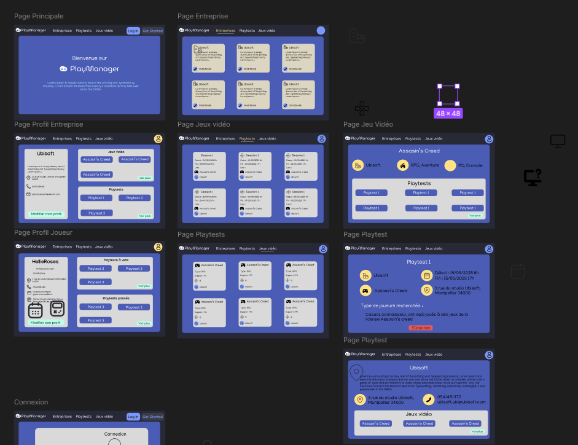
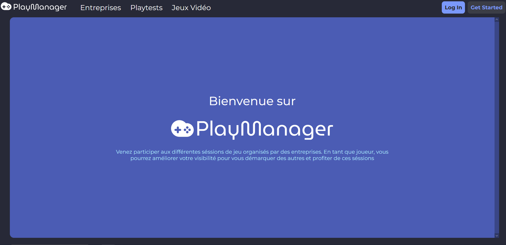
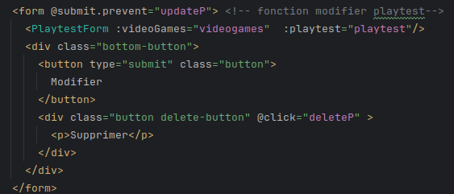
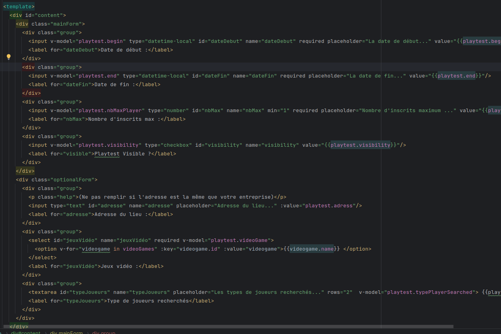

AC1: Choisir et implémenter les architectures adaptées
Lors de ces projets, j’ai appris à mettre en place une API REST et des architectures adaptées dans une application web. (exemple : héritage des utilisateurs)


Ce projet a été effectué dans le cadre du cours de développement avancé Programmation Web du Semestre 5 du BUT Informatique et s'applique à l'UE Réaliser un développement d'application
Nous avions dû en équipe de 3 personnes :
Le thème du projet était : un gestionnaire d'organisation d'évènements. Nous avons alors choisi les playtests de jeux vidéo, sujet que je connais bien grâce à mes expériences personnelles (en tant que joueuse) et à mon expérience associative.
Le projet a été découpé en deux phases :
Pour développer l'api, nous avons utilisé Symfony 5, framework du langage PHP.
Pour développer l'interface, nous avons utilisé Vue.js, framework du langage Javascript et Typescript ainsi que du HTML5/CSS3.
Pour ce qui est du versionnage de code, nous avons utilisé Git via la plateforme Gitlab.
L'api de notre site est une API Rest créé en Symfony 5.
Pour cette API, j'ai développé :
Ici la difficulté principale était de faire deux types d'utilisateurs. Les encadrants du projet nous avaient conseillés de faire un seul type d'utilisateur avec un attribut organisateur pour définir ceux qui organisaient ou pas.
Mais nous voulions que les utilisateurs soient bien dans le thème et cela demandait qu'ils aient beaucoup d'attributs différents. Alors, à la place de remplir des cases Null, nous avons choisi de faire de l'héritage via Symfony.
Il y a donc une entité "mère" User qui contient les attributs utiles pour la connexion. Dans cette classe se trouve, un type d'héritage Joined, un Discrimateur qui contient type d'utilisateur, une map de Discriminator qui contient les types d'utilisateur possibles et la classe correspondant. Ensuite, les classes Player et Company, entités filles de User avec chacune des attributs spécifiques. Dans ces classes il y a seulement besoin de dire qu'elles héritent de User mais il n'y a pas besoin de spécifier plus à Symfony.
Ensuite, la gestion de la deconnexion et du refresh de la connexion ont été fait via uen invalidation de token et en utilisant un token de refresh qui contient les informations utiles au rafraichissement de la session.
Pour finir, les commandes administrateurs ont été faites via symfony et peuvent être appelées via la console.
Pour cette partie, je me suis majoritairement occupée de toute l'interface du site.
J'ai utilisé du CSS3 et du Javascript afin de rendre l'interface agréable et interactive.
Mais avant de la développer, j'ai utilisé le logiciel figma afin de faire une maquette du site qui convenait à toutes l'équipes
 Je me suis aussi occupée de tâches qui intéragissait avec l'api comme :
Pour ces fonctionnalités, j'ai dû utiliser des formulaires basiques mais, en utilisant des components vue js pour les formulaires qui se ressemblaient. En effet, pour un formulaire de création et de modification peu de choses diffèrent, on a pu utiliser le même formulaire en changeant seulement la valeur des input si l'objet est vide ou non.
 Pour finir, j'ai aussi sécurisé l'accès aux pages du site en vérifiant l'aptitude de l'utilisateur et en redirigeant à la page d'accueil s'il ne peut pas y accéder.
Ce projet m'a permis de m'améliorer dans mes compétences de développement web. En effet, ces eux projets font suites aux cours de développement web du semestre et m'ont permis de mettre en oeuvre les nouvelles compétences que je venais d'acquérir.
Lien du site :
Lors de ces projets, j’ai appris à mettre en place une API REST et des architectures adaptées dans une application web. (exemple : héritage des utilisateurs)
Lors de ces projets, j'ai appris à mettre en ligne les sites web interconnectés